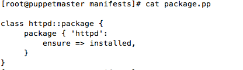

Ping Linux
Puppet Class
What is class ?
Puppet class is the templete which is used to create the individual object that defines properties and behaviours
puppet class syntax
class nameofclass {
// contents
}
Class to to install httpd
it will install and start the httpd package.this class is written in master
[root@master~]vi /etc/puppet/manifest/site.pp
class httpd {
package {'httpd':
ensure => installed,
}
service {'httpd':
ensure =>running,
}
}
include httpd
Applying the class in client machine
[root@client~]# puppet agent -t
Info: Retrieving pluginfacts Info: Retrieving plugin Info: Caching catalog for puppetclient.us-west-2.compute.internal Info: Applying configuration version '1451762786' Notice: /Stage[main]/Httpd/Package[httpd]/ensure: created Notice: Finished catalog run in 2.97 seconds
[root@client~]# service httpd status httpd is running
Class to manage user and group
useradd class creates two groups, and a user.Assign two groups to the user.
[root@master~]vi /etc/manifest/adduser.pp
[root@master~]vi /etc/manifest/site.pp import 'adduser.pp' include adduser
[root@client~]# puppet agent -t
Puppet Class with parameters
Useradd class in the following example accepts username tomuser as a parameter.Also, mygroup and mygroup2 as a parameter.
vi /etc/puppet/useradd
Class to install and start the services.
This is done with the help of modules. And explained in details in module section.In this example you can only see the class structure
vi /etc/puppet/modules/httpd/manifest/package.pp

vi /etc/puppet/modules/httpd/manifest/service.pp
vi /etc/puppet/modules/httpd/manifest/init.pp

vi /etc/puppet/manifest/site.pp
include httpd
On puppetclient
[root@puppetclient]# puppet agent -t
Info: Retrieving pluginfacts Info: Retrieving plugin Info: Caching catalog for puppetclient.us-west-2.compute.internal Notice: /Stage[main]/Httpd::Package/Package[httpd]/ensure: created Notice: /Stage[main]/Httpd::Service/Service[httpd]/ensure: ensure changed 'stopped' to 'running'